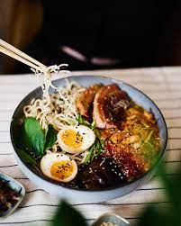

Ramen

- Prepare the Broth:
- In a large pot, combine chicken or vegetable broth, water, soy sauce, mirin, ginger, and garlic.
- Bring the mixture to a boil, then reduce the heat and let it simmer for about 30 minutes to develop flavors.
- Strain the broth to remove solids and return it to the pot.
- Cook the Noodles:
- Bring a separate pot of water to a boil.
- Add the ramen noodles and cook according to the package instructions until al dente.
- Drain the noodles and rinse them with cold water to stop the cooking process.
- Prepare the Toppings:
- Slice the cooked and seasoned proteins, such as roasted pork, chicken, or tofu.
- Blanch or sauté vegetables like bok choy, bean sprouts, and sliced mushrooms.
- Boil eggs until soft or medium-boiled, then peel and halve them.
- Assemble the Ramen:
- Divide the cooked noodles into serving bowls.
- Ladle the hot broth into each bowl, ensuring it covers the noodles.
- Add the desired toppings, such as sliced protein, blanched vegetables, and halved boiled eggs.
- Garnish and Serve:
- Sprinkle chopped green onions, sesame seeds, and nori (seaweed) on top.
- Optionally, drizzle with chili oil or sesame oil for extra flavor.
- Serve the ramen immediately and enjoy while hot.